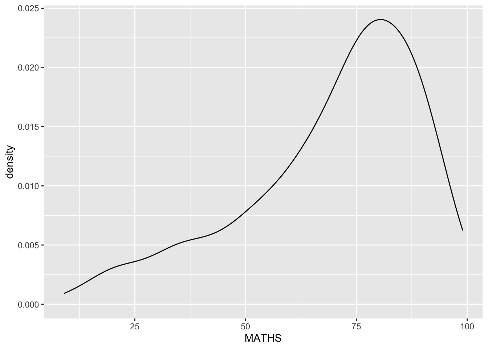
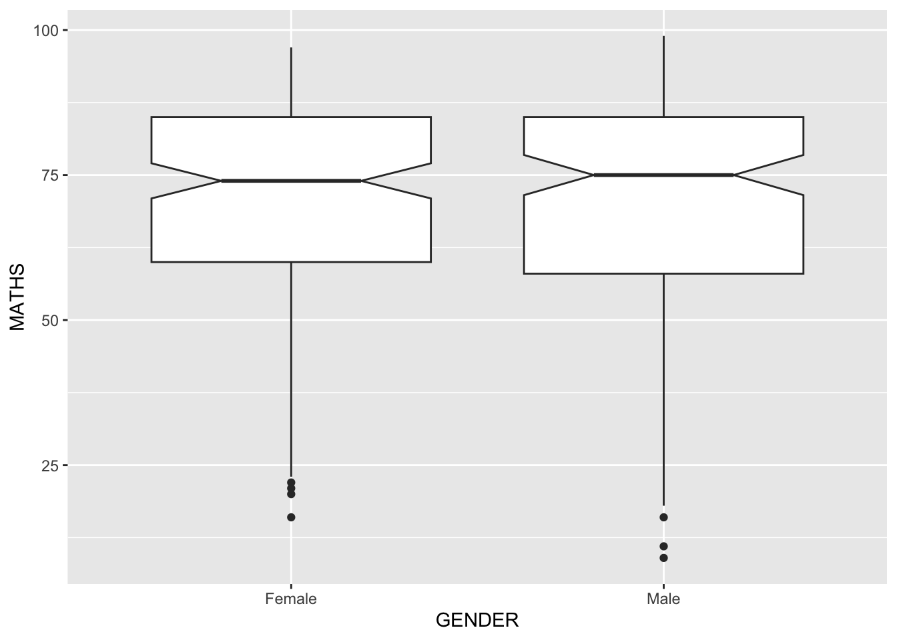

pacman::p_load(tidyverse)Hands-on Exercise 1 :
1 A Layered Grammar of Graphics: ggplot2 methods
1.1 Learning Outcome
In this chapter, you will learn the basic principles and essential components of ggplot2. At the same time, you will gain hands-on experience on using these components to plot statistical graphics based on the principle of Layered Grammar of Graphics. By then end of this chapter you will be able to apply the essential graphical elements provided by ggplot2 to create elegant and yet functional statistical graphics.
1.2 Getting started
1.2.1 Installing and loading the required libraries
Before we get started, it is important for us to ensure that the required R packages have been installed. If yes, we will load the R packages. If they have yet to be installed, we will install the R packages and load them onto R environment.
Note
The code chunk on the right assumes that you already have pacman package installed.
If not, please go ahead and install pacman first.
1.2.2 Importing data
The code chunk below imports exam_data.csv into R environment by using read_csv() function of readr package.
readr is one of the tidyverse package.
Click to view code
exam_data <- read_csv("data/Exam_data.csv")Year end examination grades of a cohort of primary 3 students from a local school.
There are a total of seven attributes. Four of them are categorical data type and the other three are in continuous data type.
The categorical attributes are: ID, CLASS, GENDER and RACE.The continuous attributes are: MATHS, ENGLISH and SCIENCE.
1.3 Introducing ggplot
ggplot 2 is an R package for declaratively creating data-driven graphics based on The It is also part of the tidyverse family specially designed for visual exploration and communication.
- For more detail, visit ggplot2 link.
1.3.1 R Graphics VS ggplot
First, let us compare how R Graphics, the core graphical functions of Base R and ggplot plot a simple histogram.
Click to view code
hist(exam_data$MATHS)
Click to view code
ggplot(data=exam_data, aes(x = MATHS)) +
geom_histogram(bins=10,
boundary = 100,
color="black",
fill="grey") +
ggtitle("Distribution of Maths scores")
As you can see that the code chunk is relatively simple if R Graphics is used. Then, the question is why ggplot2 is recommended?
As pointed out by Hadley Wickham
Important
The transferable skills from ggplot2 are not the idiosyncrasies of plotting syntax, but a powerful way of thinking about visualisation, as a way of mapping between variables and the visual properties of geometric objects that you can perceive.
1.4 Grammar of Graphics
Before we getting started using ggplot2, it is important for us to understand the principles of Grammer of Graphics.
Grammar of Graphics is a general scheme for data visualization which breaks up graphs into semantic components such as scales and layers. It was introduced by Leland Wilkinson (1999) Grammar of Graphics, Springer. The grammar of graphics is an answer to a question:
What is a statistical graphic?In the nutshell, Grammar of Graphics defines the rules of structuring mathematical and aesthetic elements into a meaningful graph.
There are two principles in Grammar of Graphics, they are:
- Graphics = distinct layers of grammatical elements
- Meaningful plots through aesthetic mapping
A good grammar of graphics will allow us to gain insight into the composition of complicated graphics, and reveal unexpected connections between seemingly different graphics (Cox 1978). It also provides a strong foundation for understanding a diverse range of graphics. Furthermore, it may also help guide us on what a well-formed or correct graphic looks like, but there will still be many grammatically correct but nonsensical graphics.
1.4.1 A Layered Grammar of Graphics
ggplot2 is an implementation of Leland Wilkinson’s Grammar of Graphics. Figure below shows the seven grammars of ggplot2.
Reference: Hadley Wickham (2010) “A layered grammar of graphics.” Journal of Computational and Graphical Statistics, vol. 19, no. 1, pp. 3–28.
A short description of each building block are as follows:
- Data: The dataset being plotted.
- Aesthetics take attributes of the data and use them to influence visual characteristics, such as position, colours, size, shape, or transparency.
- Geometrics: The visual elements used for our data, such as point, bar or line.
- Facets split the data into subsets to create multiple variations of the same graph (paneling, multiple plots).
- Statistics, statiscal transformations that summarise data (e.g. mean, confidence intervals).
- Coordinate systems define the plane on which data are mapped on the graphic.
- Themes modify all non-data components of a plot, such as main title, sub-title, y-aixs title, or legend background.
1.5 Essential Grammatical Elements in ggplot2: data
Let us call the ggplot() function using the code chunk on the right.
ggplot(data=exam_data)
Note
- A blank canvas appears.
- ggplot() initializes a ggplot object.
- The data argument defines the dataset to be used for plotting.
- If the dataset is not already a data.frame, it will be converted to one by fortify().
1.6 Essential Grammatical Elements in ggplot2:
Aesthetic mappings
The aesthetic mappings take attributes of the data and and use them to influence visual characteristics, such as position, colour, size, shape, or transparency. Each visual characteristic can thus encode an aspect of the data and be used to convey information.
All aesthetics of a plot are specified in the aes() function call (in later part of this lesson, you will see that each geom layer can have its own aes specification)
Code chunk below adds the aesthetic element into the plot.
ggplot(data=exam_data,
aes(x= MATHS))
Note
- ggplot includes the x-axis and the axis’s label.
1.7 Essential Grammatical Elements in ggplot2: geom
Geometric objects are the actual marks we put on a plot. Examples include:
- geom_point for drawing individual points (e.g., a scatter plot)
- geom_line for drawing lines (e.g., for a line charts)
- geom_smooth for drawing smoothed lines (e.g., for simple trends or approximations)
- geom_bar for drawing bars (e.g., for bar charts)
- geom_histogram for drawing binned values (e.g. a histogram)
- geom_polygon for drawing arbitrary shapes
- geom_map for drawing polygons in the shape of a map! (You can access the data to use for these maps by using the map_data() function).

- A plot must have at least one geom; there is no upper limit. You can add a geom to a plot using the + operator.
- For complete list, please refer to here.
1.7.1 Geometric Objects: geom_bar
The code chunk below plots a bar chart by using geom_bar().
ggplot(data=exam_data,
aes(x=RACE)) +
geom_bar()
1.7.2 Geometric Objects: geom_dotplot
In a dot plot, the width of a dot corresponds to the bin width (or maximum width, depending on the binning algorithm), and dots are stacked, with each dot representing one observation.
In the code chunk below, geom_dotplot() of ggplot2 is used to plot a dot plot.
ggplot(data=exam_data,
aes(x = MATHS)) +
geom_dotplot(dotsize = 0.5)
Warning
The y scale is not very useful, in fact it is very misleading.
Note
The code chunk below performs the following two steps:
- scale_y_continuous() is used to turn off the y-axis, and
- binwidth argument is used to change the binwidth to 2.5.
ggplot(data=exam_data,
aes(x = MATHS)) +
geom_dotplot(binwidth=2.5,
dotsize = 0.5) +
scale_y_continuous(NULL,
breaks = NULL) 
1.7.3 Geometric Objects: geom_histogram()
In the code chunk below, geom_histogram()is used to create a simple histogram by using values in MATHS field of exam_data.
ggplot(data=exam_data,
aes(x = MATHS)) +
geom_histogram() 
Note
Note that the default bin is 30.
1.7.4 Modifying a geometric object by changing geom()
In the code chunk below,
- bins argument is used to change the number of bins to 20,
- fill argument is used to shade the histogram with light blue color, and
- color argument is used to change the outline colour of the bars in black
ggplot(data=exam_data,
aes(x= MATHS)) +
geom_histogram(bins=20,
color="black",
fill="light blue") 
1.7.5 Modifying a geometric object by changing aes()
The code chunk below changes the interior colour of the histogram (i.e. fill) by using sub-group of aesthetic().
ggplot(data=exam_data,
aes(x= MATHS,
fill = GENDER)) +
geom_histogram(bins=20,
color="grey30")
Note
This approach can be used to colour, fill and alpha of the geometric.
1.7.6 Geometric Objects: geom-density()
geom-density() computes and plots kernel density estimate, which is a smoothed version of the histogram.
It is a useful alternative to the histogram for continuous data that comes from an underlying smooth distribution.
The code below plots the distribution of Maths scores in a kernel density estimate plot.
ggplot(data=exam_data,
aes(x = MATHS)) +
geom_density() 
The code chunk below plots two kernel density lines by using colour or fill arguments of aes()
ggplot(data=exam_data,
aes(x = MATHS,
colour = GENDER)) +
geom_density()
1.7.7 Geometric Objects: geom_boxplot
geom_boxplot() displays continuous value list. It visualises five summary statistics (the median, two hinges and two whiskers), and all “outlying” points individually.
The code chunk below plots boxplots by using geom_boxplot().
ggplot(data=exam_data,
aes(y = MATHS,
x= GENDER)) +
geom_boxplot() 
Notches are used in box plots to help visually assess whether the medians of distributions differ. If the notches do not overlap, this is evidence that the medians are different.
The code chunk below plots the distribution of Maths scores by gender in notched plot instead of boxplot.
ggplot(data=exam_data,
aes(y = MATHS,
x= GENDER)) +
geom_boxplot(notch=TRUE)
1.7.8 Geometric Objects: geom_violin
geom_violin is designed for creating violin plot. Violin plots are a way of comparing multiple data distributions. With ordinary density curves, it is difficult to compare more than just a few distributions because the lines visually interfere with each other. With a violin plot, it’s easier to compare several distributions since they’re placed side by side.
The code below plot the distribution of Maths score by gender in violin plot.
ggplot(data=exam_data,
aes(y = MATHS,
x= GENDER)) +
geom_violin()
1.7.9 Geometric Objects: geom_point()
_geom_point()- is especially useful for creating scatterplot.
The code chunk below plots a scatterplot showing the Maths and English grades of pupils by using geom_point().
ggplot(data=exam_data,
aes(x= MATHS,
y=ENGLISH)) +
geom_point() 
1.7.10 geom objects can be combined
The code chunk below plots the data points on the boxplots by using both geom_boxplot() and geom_point().
ggplot(data=exam_data,
aes(y = MATHS,
x= GENDER)) +
geom_boxplot() +
geom_point(position="jitter",
size = 0.5)